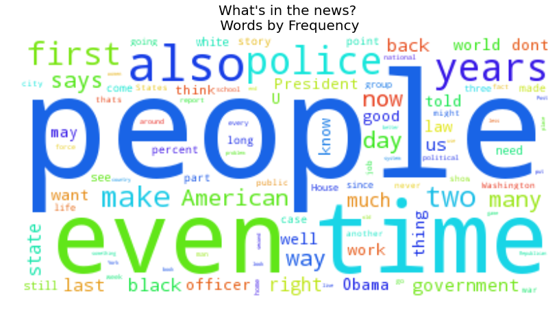
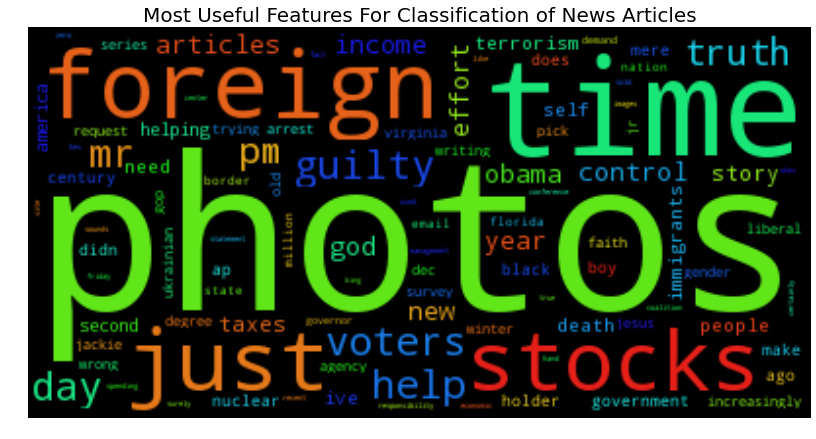
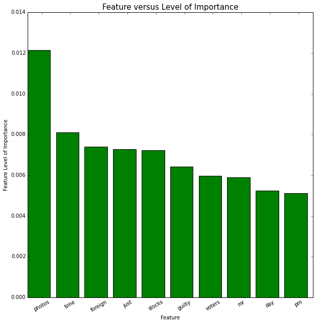
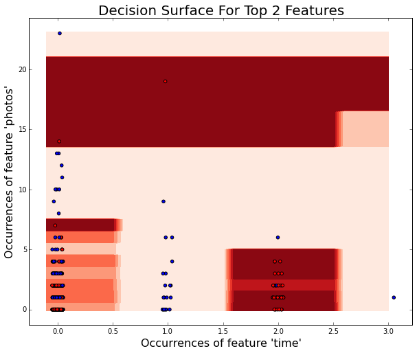
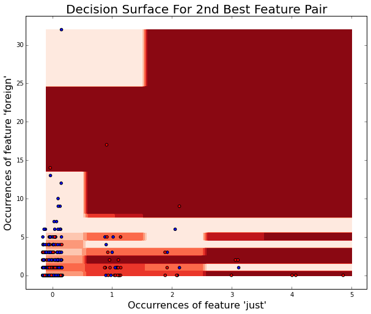

Automated Classification of Conservative or Liberal News Articles
We use concepts from machine learning and statistics to compute the political leaning of a piece of text. This works by creating a classifier which looks at features of the text, like particular words and the frequency with which those words appear. These words and frequencies are thought of as features. For a given article, we look at the features which are indicative of a conservative or a liberal slant, and we then predict whether we think the article is conservative or liberal based on these features.
The data we trained our classifier with consisted of hundreds of articles scraped from five liberal and five conservative sources. Here's a quick tour of some of the visualizations we used to explore the data.
For our first visual data exploration, we removed all of the unimportant words, like "the" or "and", from all of our data. We then created a word cloud of the words that are most frequently used in the news articles as of the week of December 8th, 2014. The bigger the word's representation in the cloud below, the more times it appeared throughout our entire dataset.
For our second visual data exploration, we created another word cloud. This word cloud represents the features which our classifier uses when considering an article. The higher the importance of the feature to the classifier, the larger the representation of the word in the word cloud below. This visualization is particularly interesting, as we see a lot of charged and emotional words, like "guilty", "voters", "foreign", "control", "obama", "income", "taxes", and "god."
After making word clouds, we decided to look at how individual features stacked up against their respective level of importances. To explore this, we used bar graph, and we say the relative feature importances of the top ten features. 'Photos' was twice as important to our classifier as words such as 'guilty' or 'voters'. This is interesting because while the two latter words are clearly political, 'photos' seems like a word that we as humans wouldn't use when deciding whether a source was conservative or liberal.
  Thanks to OS Templates